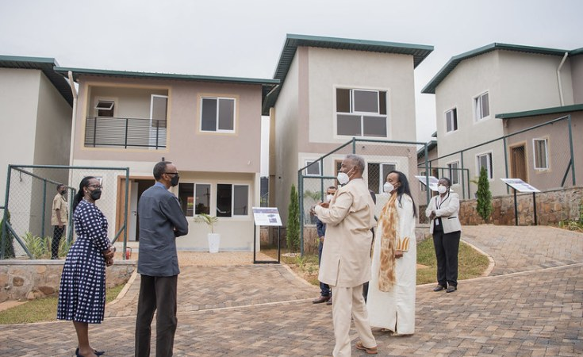

Latest Updates and Public Addresses
Fellow Rwandans, Distinguished guests, Friends of Rwanda, Today, we gather to mark the 32nd Commemoration of the Genocide against the Tutsi. This is a time to remember, to reflect, and to reaffirm our commitment to ensuring that what happened in 1994 never happens again—here or anywhere else in the world. We honor the memory of more than one million innocent lives that were lost during the Genocide against the Tutsi. These were men, women, and children whose lives were cut short because of hatred, division, and the failure of humanity. As a nation, we have chosen unity over division, resilience over despair, and hope over fear. Rwanda’s journey since 1994 has not been easy, but it has been guided by the courage of our people and the determination to rebuild our country on the foundation of dignity and shared identity. We must continue to confront the truth about our history. Remembering is not about dwelling in the past—it is about learning from it. It is about ensuring that future generations understand the consequences of hatred and the importance of protecting human life. To the survivors, we stand with you. Your strength and resilience inspire us every day. Your stories remind us why we must remain vigilant against any form of genocide ideology and divisionism. To the youth of Rwanda, you carry the responsibility of safeguarding our future. You must reject the seeds of hatred and embrace the values of unity, respect, and compassion. The international community also has a role to play. The failure to act in 1994 must never be repeated. Genocide is preventable, and the world must always choose to act in defense of humanity. As we commemorate today, let us renew our promise: Never Again. Let us continue building a Rwanda that is united, peaceful, and prosperous—a country where every citizen is valued and where our shared humanity defines us. I thank you.
Read More
Fellow Rwandans, Distinguished guests, Partners and stakeholders, Today marks an important milestone in our journey toward sustainable development as we inaugurate this new eco-friendly housing project. This initiative reflects our shared vision of building a modern Rwanda that prioritizes environmental protection, efficient resource use, and improved quality of life for our citizens. It demonstrates that development and sustainability can go hand in hand. As we confront the realities of climate change, projects like this are not a luxury—they are a necessity. By investing in green housing, we are reducing our environmental footprint while creating communities that are healthier, more resilient, and more inclusive. This project is also a testament to the power of collaboration. Government institutions, private sector partners, and the community have come together to turn this vision into reality. Such partnerships are essential as we continue to transform our country. Beyond providing homes, this development creates opportunities—jobs for our people, innovation for our industries, and a model that can be replicated across the country and beyond. To the residents who will call this place home, this is more than just housing. It is a foundation for your future, a place where families will grow, and communities will thrive. To the youth, I encourage you to embrace innovation and sustainability. The future belongs to those who can develop solutions that protect our environment while advancing our economy. As we officially inaugurate this eco-friendly housing project, let us reaffirm our commitment to building a greener, more sustainable Rwanda for generations to come. I thank you.
Read MoreYour Excellencies, Heads of State and Government, Chairperson of the African Union Commission, Distinguished delegates, Ladies and gentlemen, It is an honor to address this esteemed gathering at the African Union Summit, where we come together to reflect on our shared progress and chart the path forward for our continent. Africa stands at a critical moment in its history. We are a continent rich in potential, driven by a young and dynamic population, and endowed with vast natural and human resources. Yet, we must continue working together to transform this potential into tangible prosperity for all our people. Regional integration remains central to our ambitions. Through initiatives such as the African Continental Free Trade Area, we have the opportunity to boost intra-African trade, strengthen our economies, and reduce dependency on external markets. It is now our responsibility to fully implement these frameworks and ensure that they deliver real benefits to our citizens. Peace and security are the foundation of development. Without stability, our progress cannot be sustained. We must reinforce our collective mechanisms to prevent conflict, respond effectively to crises, and support nations in rebuilding stronger institutions. Equally important is investment in our people. Education, healthcare, and technology must remain at the forefront of our priorities. Africa’s youth are not just the leaders of tomorrow—they are the drivers of change today. We must equip them with the skills and opportunities needed to innovate and compete on a global scale. Climate change continues to pose significant challenges to our continent. Africa contributes the least to global emissions, yet we bear a disproportionate burden of its impacts. We must advocate for climate justice while advancing sustainable solutions within our own countries. Distinguished leaders, the future of Africa will be determined by the choices we make today. Let us strengthen our unity, uphold accountability, and remain committed to the vision of an integrated, prosperous, and peaceful continent. Together, under the banner of the African Union, we can achieve the Africa we want. I thank you.
Read More